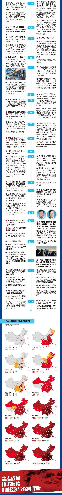

不惑创投李祝捷：短期红利改变不了一家企业的生死
原文链接 备份链接 燃财经（ID:rancaijing）原创 作者 | 闫丽娇 编辑 | 周昶帆 疫情之下，生鲜电商迎来了风口。订单激增、拉新显著、毛利润提升，时常处于补货状态。一部分长期亏损的生鲜企业，也借助此次契机，扭亏为盈。 生鲜电 …

文 |《财经》记者 李斯洋 根据公开资料整理
制图 | 财经视觉中心
抗击新冠肺炎疫情的每一天，《财经》与你共同记录！



▲点击图片查看更多疫情报道
责编 | 蒋丽 lijiang@caijing.com.cn
本文为《财经》杂志原创文章，未经授权不得转载或建立镜像。如需转载，请在文末留言申请并获取授权。
原文链接 备份链接 燃财经（ID:rancaijing）原创 作者 | 闫丽娇 编辑 | 周昶帆 疫情之下，生鲜电商迎来了风口。订单激增、拉新显著、毛利润提升，时常处于补货状态。一部分长期亏损的生鲜企业，也借助此次契机，扭亏为盈。 生鲜电 …
原文链接 备份链接 谈及中国科技大跃进，人们总会不吝赞美“互联网”这个三好学生。但盛名之下，互联网是否如人们所见所想所希望的那么神乎其技，2019年末突如其来的疫情是枚试金石。互联网公司捐款捐物固然好，但已无法满足人们的“技术想象”：直面 …
原文链接 备份链接 大家新闻里总是听到“核酸检测试剂盒”这个东西，试剂盒里的试剂自己不能判断阴性阳性的，这些试剂要放到我负责的核酸检测设备里，才能得出检测结论。 口述 | 彭 鑫 整理 | 黄 祺 现在大家说起去湖北，都感到非常恐惧。但因 …
原文链接 备份链接 【财新网】（记者 张兰太）中国疾控中心最新论文显示，全国实际医务人员感染新冠病毒病例已经达到3019例，死亡病例为5例；而国家卫生健康委副主任曾益新在2月14日的国新办发布会上曾披露，截至2月11日24时，全国共报 …
原文链接 备份链接 图片来源：图虫 记者：安晶 “ 世卫组织总干事谭德塞此前已警告，阴谋论和谣言只会“让我们英雄工作人员的工作更困难”。 ” 来自美国、英国、澳大利亚、荷兰、西班牙、马来西亚等国的27名科学家在《柳叶刀》联合发表声明，谴责 …